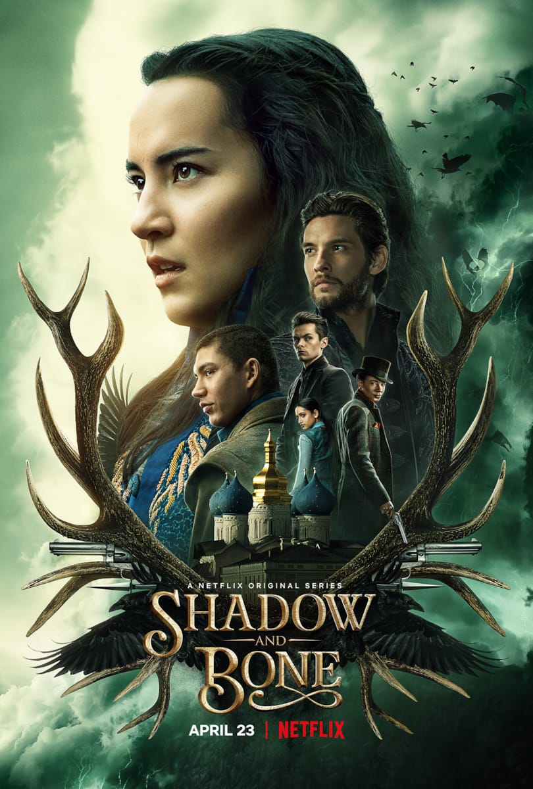

Vizyon Tarihi:2020
Yönetmen: Christian Ditter
Oyuncular: Luna Wedler, Jessica Schwarz, Benno Fürmann
Tür:Dram,Gizem
IMDb: 6.8/10
Dizi İncelemesi:
Dizi bir genç, güzel ve zeki bir kız olan Mia'nın (asıl adı da farklıymış,
sonradan öğreniyoruz),
ailesinin ölümüne neden olduğunu düşündüğü ünlü ve zengin bir bilim
insanından yıllar sonra intikam almaya çalışmasını konu alıyor.
Mia intikam ateşiyle insani olarak yapmaması gereken bir takım işlere de
bulaşmıyor değil. İlk sezon itibari ile intikamını alabilmiş değil. Dizi
size intikam almalı mı almamalı mı acaba ikilemine düşmenize neden
olabilir. Zira ben "ya ölen ölmüş kalan kalmış, işine baksana" demekten
kendimi geri alamadım. Dizideki bilim kurgu öğeleri öyle saçma sapan
düzeyde değil. Özellikle tıp ve biyolojideki ilerlemeyi ön planda
işlemişler. Şöyle ki evde, kendi kendilerine garip implantlar takan
Youtuber'ları görebiliyorsunuz. Ya da saksıdaki çiçeklerinin genetiği ile
oynayabilen üniversite öğrencileri. Bu anlamda da çok başarılıydı.
2.Gölge ve Kemik

Vizyon Tarihi:2021
Yönetmen: Eric Heisserer
Başroldekiler: Jessie Mei Li, Archie Renaux, Ben Barnes
Tür:Fantastik Dizi
IMDb: 7.7/10
Dizi İncelemesi:
Leigh Bardugo imzalı romandan uyarlanan fantastik dizi, “Lights Out”, “Arrival" ve "Bird Box" gibi yapımlardan tanıdığımız Eric Heisserer tarafından ekrana taşınıyor. Yazarın ünlü Grisha evreninde geçen "Shadow and Bone" konu olarak, ikiye bölünmüş bir evrende vahşi yaratıklara komşu olarak yaşayan insanları takip ediyor. İki ülkeyi birleştirebilecek sihirli bir gücün varlığını keşfeden bir asker, kendisini zorlu bir savaşın ortasında buluyor.
3.Chosen
Vizyon Tarihi: Ocak 2022
Yönetmen: Kaspar Munk
Başroldekiler: Malaika Berenth Mosendane, Andrea Heick Gadeberg, Andreas Dittmer, Mohamed Djeziri, Anders Heinrichsen ve Magnus Juhl Andersen
Tür:Bilim Kurgu
IMDb: 4.2/10
Dizi İncelemesi:
17 yaşındaki bir kızın hayatı, yaşadığı sakin Danimarka kasabasında gizlenen rahatsız edici gerçeği arkadaşlarıyla birlikte keşfetmesinin ardından altüst olur.
17 yaşındaki Emma, büyüdüğü kasabada kendini hep bir yabancı gibi hissetmiştir. Middelbo 17 yıl önce bir meteorun çarptığı ve sadece bir zamanlar bir kayanın çarpması ile ünlenen kasabadır. Middelbo sakinlerini gururlandıran da budur. Ama bu gerçek Emma için bir şey ifade etmez. Ve meteorla ilgili hikayenin sahte olabileceğini öğrendiğinde, tüm yalanları ortaya çıkarmayı kendine amaç edinir. Emma, her şeyin kendini daha ilginç hale getirmeye çalışan küçük, önemsiz bir taşra kasabasıyla ilgili olduğuna inanır, ancak gerçek çok daha karmaşık görünmektedir.
 Vizyon Tarihi:2020
Vizyon Tarihi:2020
 Vizyon Tarihi: Ocak 2022
Vizyon Tarihi: Ocak 2022